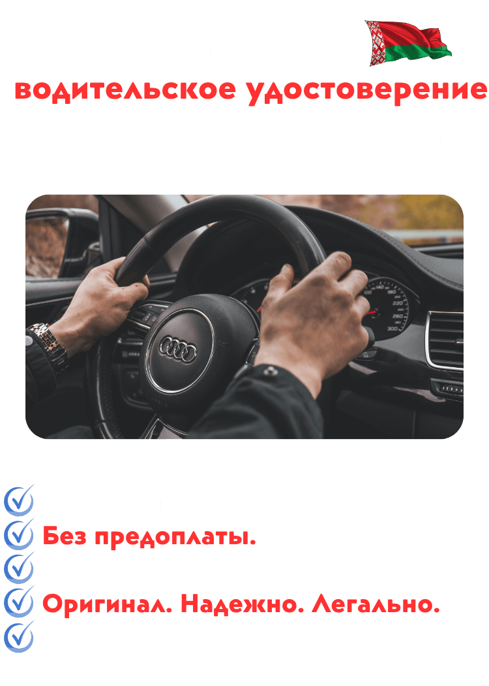

Приобретение автомобиля — это не только радостное событие, но и сложный юридический процесс. В 2026 году вступили в силу новые регламенты, касающиеся электронных паспортов транспортных средств (ЭПТС) и правил регистрации в ГАИ.
Важно помнить, что проверка истории автомобиля стала обязательной процедурой. Мы настоятельно рекомендуем обращаться к сертифицированным юристам перед подписанием договора купли-продажи.
Основные риски включают в себя: скрытые залоги, ограничения на регистрационные действия и поддельные документы. Всегда требуйте полный пакет документов у дилера.